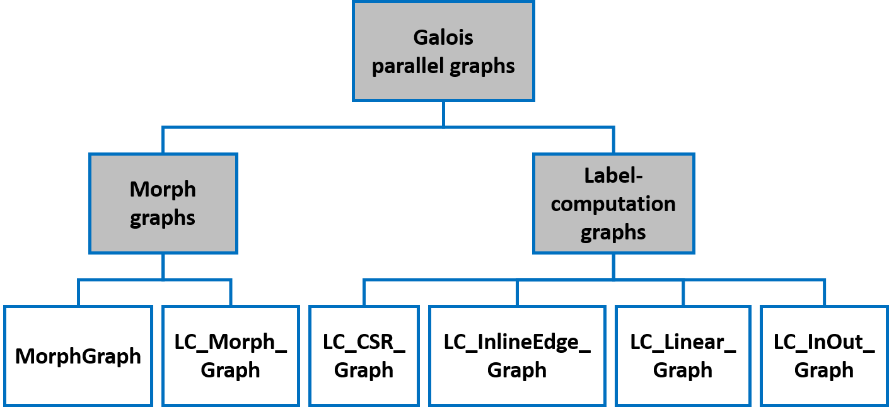
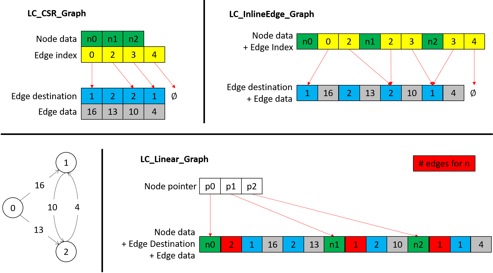

Parallel Graphs
For graph computation, Galois provides unified, standard APIs to access graph elements as well as a set of graph implementations optimized for NUMA-awareness, conflict detection and interoperability with the Galois runtime system. All graphs are in the namespace katana.

Galois Parallel Graphs
There are two types of graphs, summarized pictorially as the above hierarchy.
-
katana::MorphGraph: This graph type allows insertion and removal of nodes and edges. It is used in morph algorithms like Delaunay mesh refinement. A variation called katana::LC_Morph_Graph can be used if (1) node removals are impossible, and (2) when a node is created, its maximum degree is known.
-
katana::LC_CSR_Graph: This graph type disallows creation and removal of nodes and edges. Internally, it is implemented with compressed sparse row format, as shown in the following figure. Undirected edges must be represented as two directed edges. Galois also provides variants of this graph with different layouts in memory, e.g. katana::LC_InlineEdge_Graph, katana::LC_Linear_Graph, katana::LC_InOut_Graph.
Label-computation Graphs
Template Parameters
When defining a katana::LC_CSR_Graph, the following template parameters are required:
-
NodeTy: the type of data stored on each node. Use void when no data needs to be stored on nodes.
-
EdgeTy: the type of data stored on each edge. Use void when no data needs to be stored on edges.
The following features can be enabled using the corresponding graph member type definitions:
-
Use katana::LC_CSR_Graph::with_no_lockable< true >::type to remove abstract node locks and conflict detections.
-
Use katana::LC_CSR_Graph::with_numa_alloc< true >::type to enable NUMA-aware allocation.
-
Use katana::LC_CSR_Graph::with_out_of_line_lockable< true >::type to separate node locks from nodes.
See katana::LC_CSR_Graph for more details on which template parameters are available and what they mean.
These member type definitions can be chained together to get a graph type with multiple options specified. Below is an example of defining an LC_CSR_Graph with node data of type std::atomic<uint32_t>, edge data of type uint32_t, node locks removed and NUMA-aware allocation enabled:
APIs
The following code snippet shows how to instantiate and read in a graph from a file (in binary gr format):
A property graph is a graph that has properties associated with its nodes and edges.
Definition: TypedPropertyGraph.h:33
void readGraph(GraphTy &graph, Args &&... args)
Allocates and constructs a graph from a file.
Definition: ReadGraph.h:38
To access graph elements, use the following constructs.
-
Iteration over nodes: use the node iterator katana::LC_CSR_Graph::iterator given by katana::LC_CSR_Graph::begin and katana::LC_CSR_Graph::end.
-
Iteration over outgoing edges of a node: use the edge iterator katana::LC_CSR_Graph::edge_iterator given by katana::LC_CSR_Graph::edge_begin and katana::LC_CSR_Graph::edge_end. By default, the outgoing neighbors of the node are locked by these operations.
-
To read/write a node's data: use katana::LC_CSR_Graph::getData. By default, the node is locked by this operation.
-
To read/write an edge's data: use katana::LC_CSR_Graph::getEdgeData.
-
To access the destination node of an outgoing edge: use katana::LC_CSR_Graph::getEdgeDst.
-
To query the number of nodes: use katana::LC_CSR_Graph::size.
-
To query the number of outgoing edges: use katana::LC_CSR_Graph::sizeEdges.
See katana::LC_CSR_Graph for other available APIs, e.g. those for sorting edges for a node and searching for a specific edge.
The following example from lonestar/tutorial_examples/GraphTraversalSerial.cpp iterates through all nodes, and for each node, adds all outgoing edges' weights to the node data. This example is written in C++11 to avoid mentioning node iterators and edge iterators explicitly.
for (auto n : g) {
auto& sum = g.getData(n);
sum = 0;
for (auto e : g.edges(n)) {
sum += g.getEdgeData(e);
}
}
To avoid locking nodes and conflict detection, pass katana::MethodFlag::UNPROTECTED to getData(), edge_begin(), edge_end() or edges() as the following example from lonestar/tutorial_examples/ConflictAwareTorus.cpp:
size_t numWrongAnswer = 0;
for (auto n : torus) {
numWrongAnswer++;
}
}
std::cout << "# nodes of wrong answer: " << numWrongAnswer << std::endl;
Different Storage Formats
Galois provides two variants for katana::LC_CSR_Graph: katana::LC_InlineEdge_Graph and katana::LC_Linear_Graph. They all support the same functionalities but with different storage formats, as shown in the following figure. The differences come from merging arrays in CSR format to enhance spatial locality for certain access patterns.

Differences of Galois label-computation graphs
Tracking Incoming Edges
katana::LC_InOut_Graph can be used if the desired computation needs to track incoming edges. Below is an example of defining a katana::LC_InOut_Graph:
using GNode = Graph::GraphNode;
Modify a LC_Graph to have in and out edges.
Definition: LC_InOut_Graph.h:38
Graph::Node GNode
Definition: jaccard.cpp:31
If true, do not use abstract locks in graph.
Definition: LC_CSR_Graph.h:97
If the graph is not symmetric, then both the original and the transposed binary graphs are required to initialize a katana::LC_InOut_Graph, as the following code snippet shows.
The functionality of a katana::LC_InOut_Graph is the same as the inner LC_Graph, e.g. katana::LC_CSR_Graph. Additionally, it is possible to iterate over incoming edges/neighbors with the following methods.
-
To iterate over the incoming edges of a node, use katana::LC_InOut_Graph::in_edge_iterator given by katana::LC_InOut_Graph::in_edge_begin and katana::LC_InOut_Graph::in_edge_end.
-
To get access to the destination of an incoming edge, use katana::LC_InOut_Graph::getInEdgeDst.
-
To read/write an incoming edge's data, use katana::LC_InOut_Graph::getInEdgeData.
The data for incoming edges are stored by value. Users are responsible for maintaining the consistency of outgoing edges and corresponding incoming edges.
Morph Graphs
katana::MorphGraph can be used in cases where an application requires modifying graph topology.
Template Parameters
katana::MorphGraph takes the following template parameters:
-
NodeTy: the type of data stored on nodes. Use void if there is no data stored on nodes.
-
EdgeTy: the type of data stored on edges. Use void if there is no data stored on edges.
-
Directional: a boolean variable indicating whether this is a directed graph. If not, then each edges will have its symmetric counterpart, all represented as outgoing edges.
-
InOut: a boolean variable indicating whether incoming edges are tracked. If Directional and InOut are both true, then each edge will have its incoming counterpart. This is default to false.
Note that an edge and its symmetric/incoming counterpart share edge data.
The following features can be enabled using the corresponding graph member type definitions.
-
Use katana::MorphGraph::with_no_lockable< true >::type to remove node locks and turn off conflict detection.
-
Use katana::MorphGraph::with_sorted_neighbors< true >::type to have the edge lists of nodes always sorted.
Below is an example of defining a directed katana::MorphGraph with integer node data, no edge data, and no tracking incoming edges. Neighbors of each node are always sorted.
using GNode = Graph::GraphNode;
Struct used to define if neighbors are sorted or not in the graph.
Definition: MorphGraph.h:304
APIs
katana::MorphGraph supports all the functionalities in katana::LC_CSR_Graph except for size() and sizeEdges(). Additionally, katana::MorphGraph provides the following APIs to modify graph topology:
-
katana::MorphGraph::createNode allocates space for node data, and katana::MorphGraph::addNode adds to a graph a node already allocated by katana::MorphGraph::createNode.
-
katana::MorphGraph::addEdge and katana::MorphGraph::addMultiEdge both add an edge between existing nodes in a graph. The former adds an edge only when the edge does not exist, while the latter always adds the edge. The incoming/symmetric counterpart of the edge will also be added if tracked. Lock for an edge's source node is always acquired, and that for the destination node is also acquired if incoming/symmetric edges are tracked.
-
katana::MorphGraph::removeNode removes a node from a graph along with any incoming or outgoing edges associated with that node. Only the node being removed is locked.
-
katana::MorphGraph::removeEdge removes an edge from a graph along with its incoming/symmetric counterpart, if there is one. Nodes are locked in the same way as in katana::MorphGraph::addEdge.
See katana::MorphGraph for other available APIs for things like sorting the edges of a node and searching for a specific edge.
The following code snippet shows how to add nodes and edges to a katana::MorphGraph. Note that the nodes must be created first, then added to a katana::MorphGraph. Once that is done, edges can be added between the nodes.
void
constructTorus(
Graph& g,
int height,
int width) {
int numNodes = height * width;
std::vector<GNode> nodes(numNodes);
for (int i = 0; i < numNodes; ++i) {
0);
g.addNode(n);
nodes[i] = n;
}
for (int x = 0; x < width; ++x) {
for (int y = 0; y < height; ++y) {
GNode c = nodes[x * height + y];
GNode n = nodes[x * height + ((y + 1) % height)];
GNode s = nodes[x * height + ((y - 1 + height) % height)];
GNode e = nodes[((x + 1) % width) * height + y];
GNode w = nodes[((x - 1 + width) % width) * height + y];
g.addEdge(c, n);
g.addEdge(c, s);
g.addEdge(c, e);
g.addEdge(c, w);
}
}
}
See the full example at lonestar/tutorial_examples/TorusConstruction.cpp
LC_Morph_Graph
If node removals are not allowed and the maximum degree of a node is known when creating the node, then katana::LC_Morph_Graph can be used.
The template parameters and features of katana::LC_Morph_Graph are the same as those of katana::LC_CSR_Graph.
The APIs of katana::LC_Morph_Graph are the same with those of katana::MorphGraph with the following exceptions.
-
katana::LC_Morph_Graph has no method of removeNode.
-
katana::LC_Morph_Graph::createNode will allocate node data and add the node to the graph.
-
If a katana::LC_Morph_Graph is meant to be symmetric, then the user is responsible for maintaining the symmetry. In particular, this matters when using the following functions:
Since symmetry is maintained by the user, only the lock for the source node of an edge is acquired when calling katana::LC_Morph_Graph::addEdge, katana::LC_Morph_Graph::addMultiEdge, and katana::LC_Morph_Graph::removeEdge.
Insert Bag
katana::InsertBag is an unordered collection that allows parallel insertions. It uses customized memory allocations to achieve scalable parallel insertions.
katana::InsertBag expects a template parameter, T, for the type of elements that the katana::InsertBag contains. See katana::InsertBag for other optional template parameters.
 1.9.1
1.9.1